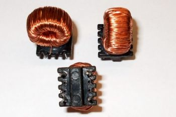
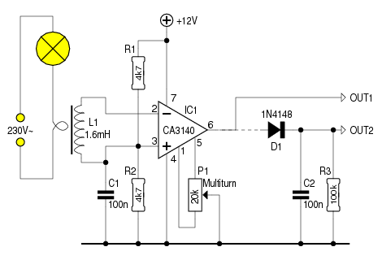

Er bestaan verschillende manieren om na te gaan of een apparaat
al-dan niet stroom opneemt uit het elektriciteitsnet.
Men kan een shunt-weerstand in serie met de verbruiker plaatsen,
en de spanning daarover meten. Dat heeft als nadeel, dat de
schakeling rechtstreeks met het lichtnet verbonden is.
Men kan ook een laagspanningstrafo "andersom" in serie met de
verbruiker plaatsen, en zijn ingangsspanning beperken met twee
dioden die in 69-positie zijn aangesloten.
Een voorbeeld daarvan is te zien bij de
NetSlaaf.
De spanningsval over
de dioden is te verwaarlozen, maar bij grotere stromen heb je
wel dikke exemplaren nodig. En ook het kleinste trafo'tje neemt
aardig wat printruimte in beslag.
 Derde optie: een “echte” stroomtrafo gebruiken. Neem een spoel als deze. Dit is een 1.6mH-spoeltje. Eén van de leidingen, die naar de verbruiker gaan, laat je door het midden van de spoel lopen. De opgewekte spanning is gering - enkele mV. En daarnaast pikt de spoel allerlei rotzooi op uit de omgeving. Er moet dus flink versterkt worden, vanaf een bepaalde grens. Dat kan zo:

Er is geen terugkoppeling - de opamp versterkt het verschil
tussen zijn ingangen dus maximaal. Ook de spanningen die
geïnduceerd worden door nabijgelegen verbruikers, of door het
lichtnet zelf.
Edoch, we kunnen de ingangs-offset bijstellen met
behulp van een potmeter. Zodra die offset groter is dan de
ongewenste storing, verschijnt die niet meer aan de uitgang.
De wisselspanning, die de spoel produceert als er verbruik is,
overstijgt de offset en wordt door de opamp vertaald tot een
blokgolf.
Met een 25W-lamp (100mA) als verbruiker, en een stel TL-lampen
in de buurt, werkt het geheel betrouwbaar op een breadboard.
Het verdient aanbeveling, om de verbinding tussen spoel en opamp
met afgeschermde draad uit te voeren. In een omgeving met veel
storing kan overwogen worden, de spoel in te blikken.
De rechtstreekse uitgang (OUT1) kan bv. gebruikt worden om een
interrupt-pin van een µC te triggeren - daar moet dan wel een R
tussen, vergezeld van een passende zener. De D/C/R-combinatie
(OUT2) kan voor andere doeleinden ingezet worden.
Desgewenst kan P1 zodanig ingesteld worden, dat de uitgang hoog
is wanneer er geen verbuik gedetecteerd wordt.
Wil men uitgang OUT2 gebruiken, dan moet R3 tussen Vcc en OUT2,
en moet D1 omgepoold worden.